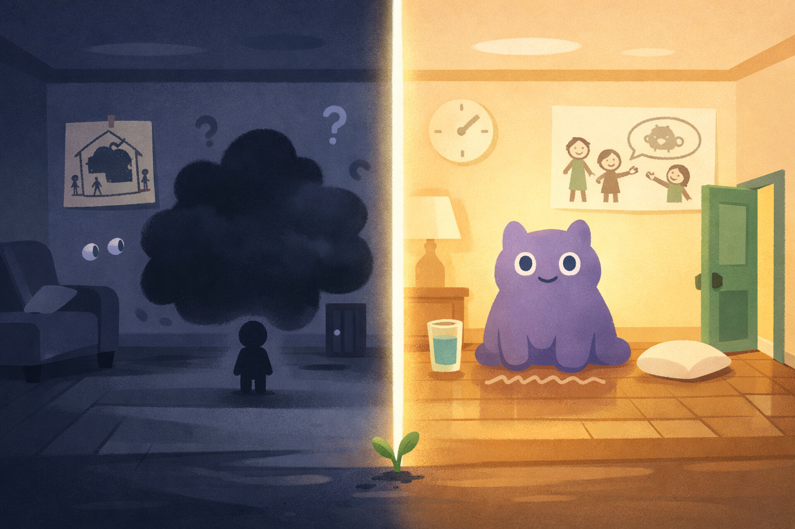
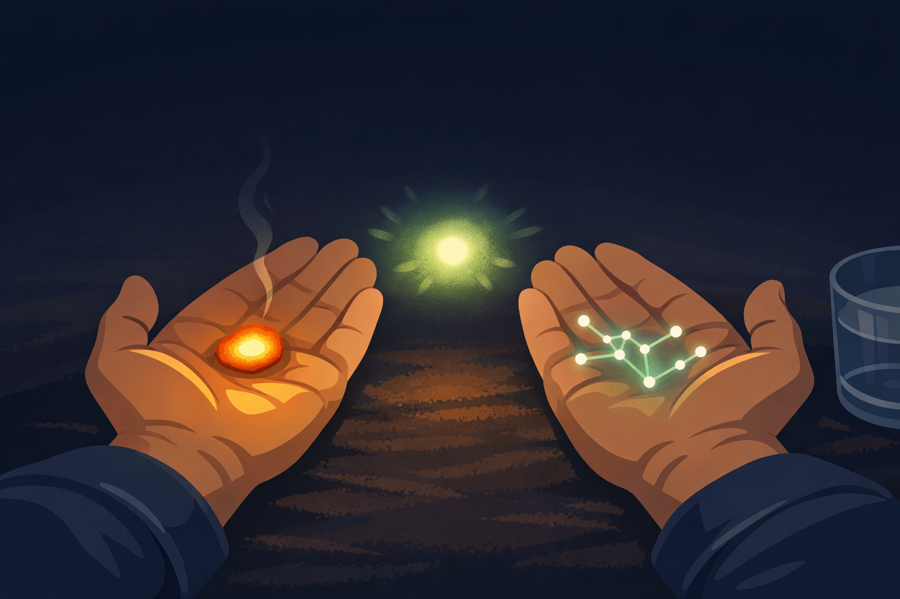

By Rustam Iuldashov
30 years lived experience with chronic migraine · Sources: 15 peer-reviewed references including Headache (CaMEO, n=1,411), Annual Review of Psychology (4,000+ studies), prospective cohort (n=239) · Last updated: March 23, 2026
Medical Note: This content is based on peer-reviewed research from Headache, Annual Review of Psychology, Journal of Clinical Psychology, Contemporary Family Therapy, and Frontiers in Pediatrics. The author is a patient advocate, not a licensed medical professional. Always consult your healthcare provider for medical or psychological concerns.
It starts with a whisper through the door.
“Mommy? Are you awake?”
You are not. Not in any way that counts. The light under the curtain is a blade. Your child’s voice — the one you love more than anything on earth — lands like a small detonation behind your left eye. You manage one word: “Sick, baby.”
A pause. Small footsteps retreating. Then: the sound of cereal being poured.
That sound will stay with you for days.
If you are raising children while living with chronic migraine, you know this moment. You know the accounting: every school play missed, every birthday party survived behind sunglasses, every dinner that ended with you on the kitchen floor waiting for the wave to pass. You have run the numbers so many times they have become part of who you think you are.
I am failing them.
You are not. But we need to talk about what is actually happening inside your family — and what the science says you can do about it.
The Numbers You Were Never Told
Migraine doesn’t just happen to you. It reorganizes the entire household.
A landmark observational study published in the journal Headache — drawing on data from the Chronic Migraine Epidemiology and Outcomes study — found that 50% of adolescents with a chronically migrainous parent reported being unable to get help when they needed it at least once a month.[1] Nearly half said their parent had missed a family outing in the past month due to migraine.[1] And in a separate survey of over 1,100 people living with migraine, 43% believed they would be better parents if they didn’t have the condition.[1]
Forty-three percent. Almost half of us carry this belief. It is not a personality flaw. It is a near-universal psychological response to chronic pain — and understanding why it forms is the first step to taking it apart.
The Guilt Spiral Has a Name
What you are experiencing is not ordinary guilt. Research identifies it as maladaptive shame-guilt fusion — the point where the healthy signal of I wish I could have done more collapses into the corrosive belief of I am broken, and therefore a bad parent.[2]
The difference matters. Kristin Neff’s research at the University of Texas — now spanning over 4,000 peer-reviewed publications — draws a precise line between shame and guilt.[3] Shame is a judgment about the self. Guilt is a judgment about a behavior. Shame is negatively linked to growth, motivation, and wellbeing. Healthy guilt — the kind that says I care, and I want to do better — can actually serve you.[3]
For parents with migraine, the illness itself becomes the object of shame. As if having a neurological condition is a moral verdict.
Research on parents of children with various chronic conditions confirms that unjustified guilt is nearly universal, regardless of diagnosis.[4] Knowing this doesn’t erase the feeling. But it gives it the right name — not truth, just biology.
What Your Children Are Actually Experiencing
Here is where the science surprises most people.
A prospective cohort study tracking 239 families over six months found something unexpected: when parents showed protective behaviors — overcompensating on good days, hovering, anxiously managing everything they had missed — children’s headache-related disability actually worsened over time.[5] The children absorbed the anxiety underneath the overcompensation. They felt the guilt, not just the love.
The implication is radical. Your children do not need a perfect parent. They need an honest one.
Children read parental stress through body language, tone, and environmental cues long before they have words for what they are sensing.[6] There is a biological reason why pretending to be fine doesn’t work: mirror neurons. These specialized brain cells fire both when we experience an emotion and when we observe it in someone else — they are the neural basis of empathy. A child doesn’t analyze your expression; their brain mirrors it, automatically and involuntarily. Research on family systems and parental emotional regulation confirms what neuroscience predicts: a parent’s suppressed anxiety doesn’t disappear in a child’s perception — it is detected and amplified.[6] You cannot out-perform your nervous system in front of a four-year-old.
When illness is treated as a secret — when you disappear behind a closed door and the household arranges itself around an unnamed thing — children fill that silence with their own explanations. And children’s explanations for adult pain almost always center on themselves.
Did I make Mommy sick? Did I do something wrong?[7]
The silence meant to protect them becomes the thing that frightens them most.

The Age-by-Age Conversation
Research on child communication about parental illness is consistent across decades: age-appropriate honesty outperforms protective silence at every developmental stage.[8]
Ages 3–5. Young children cannot understand neurology. But they understand monsters and stories. The monster is not you. The monster came to visit. You are fighting it. This is not merely a sweet metaphor — it is clinically grounded externalization, a technique at the heart of narrative therapy developed by Michael White and David Epston.[9] A controlled study at the Dulwich Centre found that children who practiced narrative externalization showed significant improvements in empathy, self-awareness, and responsible decision-making compared to controls.[10] They stop internalizing the fear as their own failure.
“Mommy’s monster woke up today.” Four words that do more psychological work than most adults realize.
One important note for two-parent households: whichever parent is well on a migraine day should use the same language. If one parent calls it “Mommy’s monster” and the other calls it “a bad headache” or nothing at all, children receive conflicting signals — and children resolve conflict by defaulting to the more frightening interpretation. Narrative consistency between both parents gives the child a single, stable story to hold.
Ages 6–12. School-age children are concrete thinkers. They need facts and, above all, a plan. My brain gets sick sometimes. It’s called migraine. It makes light and sound hurt a lot. It’s not catching. It won’t kill me. When it happens, here is what we do. Research confirms that clear communication and consistent family routines significantly reduce anxiety in children of chronically ill parents.[8] The plan is the reassurance — more than any comfort you could offer from behind a closed door.
Ages 13 and up. Teenagers already know more than you think they do. A 2024 study in Frontiers in Psychology found that adolescents whose parents spoke openly about chronic illness — including their own fear and uncertainty — reported feeling more trusted, less isolated, and more resilient.[12] Those kept at a protective distance reported higher anxiety and a sense of being marginalized within their own families.[12] Teenagers do not need to be protected from the truth. They need to be invited into it.
⚠️ When to Seek Help — For You and Your Child
Migraine is a medical condition, not a parenting problem. But if your child shows persistent signs of anxiety, withdrawal, sleep disruption, or declining school performance that coincides with your migraine pattern, speak with their pediatrician or a child psychologist. These responses are treatable — and early support makes a measurable difference. If your own migraines are occurring more than 4 days per month, lasting longer than 72 hours, or are accompanied by new neurological symptoms such as sudden vision loss, speech changes, or one-sided weakness, seek medical evaluation promptly. Do not use this article to self-diagnose or delay care.
Self-Compassion Is Not a Soft Option
The most evidence-supported tool for parents with chronic illness is one most of us resist. Not because it sounds hard. Because it sounds indulgent.
Self-compassion.
A 2015 study by Neff and Faso found that parents of children with special needs who practiced self-compassion experienced measurably less stress, less depression, more life satisfaction, and more hope — under objectively difficult circumstances.[3] A 2020 adaptation of Neff’s program specifically for parents of chronically ill children produced results the research team described as transformative.[14] Parents reported that self-compassion had changed their ability to care for their children in a sustainable manner.
The mechanism is straightforward. Self-compassion interrupts the shame spiral by doing two things simultaneously: it acknowledges the difficulty fully, and it reminds you that difficulty is part of the shared human condition — not evidence of personal failure.[3]
Kristin Neff calls it the self-compassion pause. Three steps. Thirty seconds. Practice it the moment you surface from an attack, before the mental accounting begins:[3]
The Self-Compassion Pause
1. Acknowledge the pain — “This was really hard.” Name what happened without minimizing it.
2. Acknowledge common humanity — “I am not alone in this.” Millions of parents navigate chronic illness. This moment is human, not exceptional.
3. Be kind to yourself — “I did the best I could.” Speak to yourself as you would to a close friend in the same situation.
Three sentences. Ten seconds. Research distinguishes this state neurologically from self-criticism — it activates different brain circuits and produces measurably different outcomes.[3] This is not just comfort. It is medicine.

What You Are Actually Teaching Them
Here is the thing no one tells you during the worst of it.
Children raised by parents with chronic illness often develop something their peers in pain-free households do not: early, embodied empathy. They learn that people they love have invisible struggles. They learn that love is not conditional on wellness. They learn that a family can organize itself around something hard — imperfectly, creatively, together — and still be a family.[15]
Research on siblings of chronically ill children found that those given age-appropriate caregiving roles developed pride, emotional maturity, and a sense of belonging.[15] The same dynamic plays out between parent and child. A child who pours their own cereal while a parent recovers is not being neglected. They are learning that they are capable.
This is not a rationalization for doing nothing. It is a reframe — backed by data — that the story of migraine parenting is not only a story of loss.
You Are Still the Author
I have lived with migraine for 30 years. I have been the person on the kitchen floor. I know the specific loneliness of hearing laughter in the next room and being too broken to reach it.
But I also know this: the monster has a name. And giving it a name — to yourself, to your children, to the story your family tells about itself — is an act of radical honesty that research confirms actually helps.
You are not the migraine. You are the parent who keeps getting up.
That is the story your children will carry forward. Not the days you couldn’t. The fact that you kept coming back.
Key Takeaways
- 43% of parents with migraine believe they would parent better without it — this guilt is near-universal, not a sign of failure.[1]
- Mirror neurons make pretending impossible. Your child’s brain mirrors your suppressed anxiety automatically — honesty is more protective than performance.[6]
- Externalization works. Naming the migraine as a “monster” — separate from you — reduces shame for both parent and child, backed by controlled research.[9] [10]
- Both parents should use the same language. Narrative consistency gives children one stable story instead of two frightening interpretations.
- Overcompensating on well days is associated with worse outcomes for children than steady, honest presence.[5]
- The self-compassion pause is three sentences. Acknowledge pain → acknowledge common humanity → be kind to yourself.[3]
- The skills your children are gaining — empathy, resilience, agency — are real, and they come partly from navigating this with you.[15]
⚕️ Important Medical Disclaimer
This article is for informational and educational purposes only and does not constitute medical advice, diagnosis, or treatment. The author, Rustam Iuldashov, is not a licensed physician, neurologist, or healthcare professional. He is a patient advocate with 30 years of personal experience living with chronic migraine.
All clinical claims in this article are sourced from peer-reviewed research published in indexed medical journals. Study designs and sample sizes are noted where applicable.
The psychological concepts discussed here — including externalization, narrative therapy, and self-compassion — are drawn from published clinical frameworks and research. They are presented for educational purposes and should not replace professional therapy or counseling.
If you or your child are experiencing significant emotional distress related to chronic migraine, please consult a qualified healthcare provider or licensed therapist. This content was last reviewed for accuracy on March 23, 2026.
References
- Seng EK, Mauser E, Marzouk M, Patel Z, Rosen N, Buse D. “When Mom Has Migraine: An Observational Study of the Impact of Parental Migraine on Adolescent Children.” Headache, 59:2 (2019). doi:10.1111/head.13456. PMC6955157. Study design: Cross-sectional observational. n=1,411 adolescents (CaMEO).
- Kandemir G, Hesapcioglu ST, Kurt ANC. “What Are the Psychosocial Factors Associated With Migraine in the Child?” Journal of Child Neurology, 33:4 (2018). doi:10.1177/0883073817749377. Study design: Cross-sectional.
- Neff KD. “Self-Compassion: Theory, Method, Research, and Intervention.” Annual Review of Psychology, 74:193–218 (2023). doi:10.1146/annurev-psych-032420-031047. Study design: Systematic review. n=4,000+ studies. Also: Neff KD, Faso DJ. “Self-Compassion and Well-Being in Parents of Children with Autism.” Mindfulness, 6(4):938–947 (2015). doi:10.1007/s12671-014-0359-5.
- Stein REK. “Mental Health Concerns and Childhood Chronic Physical Health Conditions: A Narrative Review.” Pediatric Medicine, 5:5 (2022). doi:10.21037/pm-20-107. Study design: Narrative review.
- Law EF, Groenewald CB, Fisher E, et al. “Longitudinal Impact of Parent Factors in Adolescents with Migraine and Tension-Type Headache.” Headache, 60:9 (2020). doi:10.1111/head.13943. PMC7719069. Study design: Prospective cohort. n=239, 6-month follow-up.
- Siegel DJ, Hartzell M. Parenting from the Inside Out. Tarcher/Penguin, 2003. Also: Smith S, Tallon M, Clark C, Jones L, Mörelius E. “You Never Exhale Fully Because You’re Not Sure What’s NEXT.” Frontiers in Pediatrics, 10:902655 (2022). doi:10.3389/fped.2022.902655. Study design: Qualitative IPA. n=20 parents.
- Treating Parents of Children With Chronic Health Conditions: The Role of the General Psychiatrist. Focus, 10:3 (2012). doi:10.1176/appi.focus.10.3.255. Study design: Clinical review.
- NHS Lothian CAMHS. “Helping Children Cope with a Chronic Illness.” Clinical guidance document, 2023.
- White M, Epston D. Narrative Means to Therapeutic Ends. W.W. Norton & Co., 1990. Also: Ramey HL, Tarulli D, Frijters JC, et al. “A Sequential Analysis of Externalizing in Narrative Therapy with Children.” Contemporary Family Therapy, 31:262–279 (2009). doi:10.1007/s10591-009-9095-5.
- Dulwich Centre. “Collection: Evidence for the Effectiveness of Narrative Therapy.” 2023. dulwichcentre.com.au. Study design: Controlled pre-post. Key finding: significant improvement in self-awareness, empathy, and responsible decision-making vs. control group.
- Parenting Stress and Emotional/Behavioral Problems in Adolescents with Primary Headache. Frontiers in Neurology, 8:749 (2017). doi:10.3389/fneur.2017.00749. Study design: Cross-sectional. n=35 + 23 controls.
- Dalton L, et al. “Experiences of Patients Talking About Mental Illness with Their Children: A Qualitative Study.” Frontiers in Psychology, 15:1504130 (2024). doi:10.3389/fpsyg.2024.1504130. Study design: Qualitative.
- Freedman J, Combs G. Narrative Therapy: The Social Construction of Preferred Realities. W.W. Norton, 1996.
- Neff KD, Knox MC, Long P, Gregory K. “Caring for Others Without Losing Yourself: An Adaptation of the Mindful Self-Compassion Program for Healthcare Communities.” Journal of Clinical Psychology, 76(9):1543–1562 (2020). doi:10.1002/jclp.22943. Study design: RCT (two studies).
- Schumann A, Vatne TM, Fjermestad KW. “What Challenges Do Siblings of Children with Chronic Disorders Express?” Journal of Pediatric Nursing, 76:1–8 (2024). doi:10.1016/j.pedn.2024.02.003. Study design: Qualitative.

How We Create Content
- Peer-reviewed sources only. This article cites Headache, Annual Review of Psychology, Journal of Clinical Psychology, Contemporary Family Therapy, Frontiers in Pediatrics, Frontiers in Psychology, Frontiers in Neurology, Journal of Pediatric Nursing, and Pediatric Medicine.
- Study transparency. Study design and sample sizes noted for all clinical references.
- Source verification. All claims backed by numbered references with DOI links.
- Experience + Science. 30 years personal migraine experience combined with peer-reviewed evidence.
- Regular updates. Articles reviewed when significant new research emerges.
- No conflicts of interest. No pharmaceutical funding. No supplement partnerships. No sponsored content.
Give Your Migraine a Name. Track It Together.
Migraine Companion helps families externalize migraine — with Mi as the character you can all point at. Track attacks, spot patterns, and build a shared language for the invisible thing in your home. Built by someone who has lived with migraine for 30 years.
Last reviewed: March 2026
Next scheduled review: September 2026